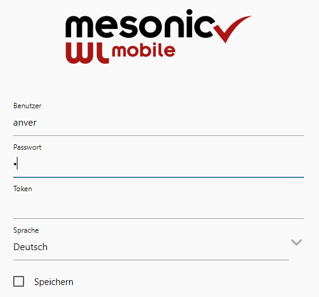
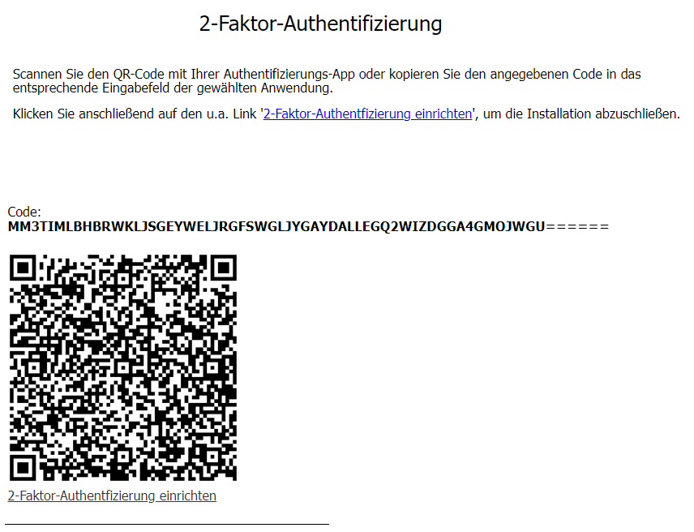
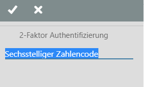
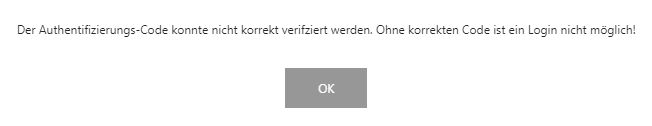
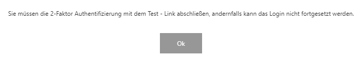
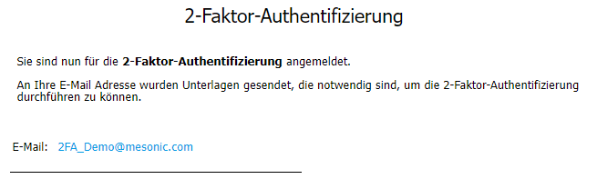
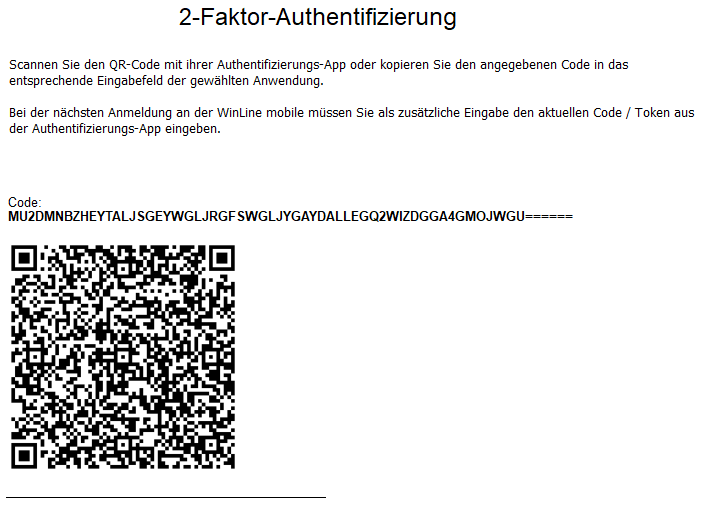
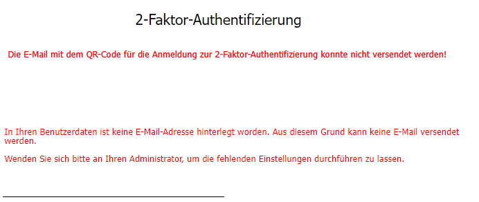
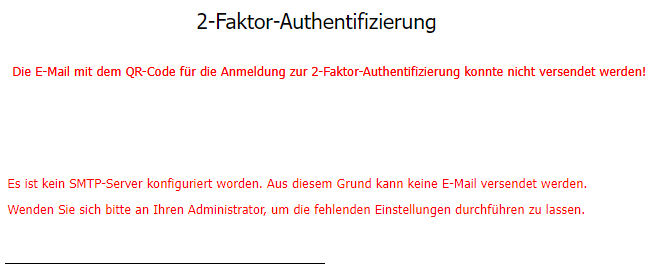

1. Szenario:
Die erstmalige Benutzerauthentifizierung erfolgt direkt bei der Anmeldung an der WinLine mobile
Dies setzt voraus, dass die Option "Anmeldung für 2-Faktor-Authentifizierung per Mail senden" im Vorfeld seitens des Administrators nicht selektiert wurde.
Der WinLine mobile-Benutzer meldet sich mit den Bekannten Anmeldeinformationen "Benutzer" und "Passwort" an. Das Eingabefeld "Token" bleibt zunächst frei, da diese Informationen noch nicht zur Verfügung stehen können.

Hinweis
Wird die 2FA erstmalig eingerichtet, oder wird die Funktionalität seitens eines Administrators entfernt und erneut aktiviert, so ist hier ggf. kein Eingabefeld für "Token" sichtbar.
Eine Meldung gibt Aufschluss darüber, wie weiter verfahren werden muss.

In den entsprechenden 2FA-Apps wird der Anmeldeprozess über den zur Verfügung stehenden Code/Token bzw. den QR-Code individuell erklärt. Sobald dieser Vorgang abgeschlossen worden ist, erhält der Benutzer dort als Ergebnis einen Eintrag, welcher applikationsspezifisch folgende Informationen beinhalten kann:
ü WinLine Benutzer-Name
ü WinLine-Lizenznummer
ü sechsstelliger Code/Token
Darüber hinaus gibt ein Indikator Aufschluss über die Gültigkeitsdauer des generierten Codes/Tokens.
Hinweis
mesonic gibt in dem Anmeldeprozess innerhalb der Anweisungen Hinweise darauf, welche Authentifizierungs-Apps genutzt werden können. Darüber hinaus gibt es eine Vielzahl weiterer geeigneter 2FA-Apps auf dem Markt.
Nachdem die Einrichtung der 2FA in der App abgeschlossen wurde, kann über den Drill Down "2-Faktor-Authentifizierung einrichten" (welcher unter dem QR-Code positioniert ist) das folgende Eingabefenster geöffnet werden.

Hier fordert das Programm dazu auf, einen gültigen Code/Token aus der 2FA-App einzugeben. Da der Fokus bereits auf dem Eingabefeld liegt, kann die sechstellige Zahlenfolge direkt eingetragen werden. Nach der Bestätigung öffnet sich die mobile Applikation wie gewohnt.
Hinweise
Aufgrund schlechten Timings kann es dazu kommen, dass der generierte Code/Token nicht verifiziert werden kann.

Sollte der Vorgang durch den Benutzer bewusst abgebrochen werden, so gibt es einen weiteren Hinweis, welcher auf die noch offene Authentifizierung aufmerksam macht.

Damit eine Authentifizierung dennoch erfolgen kann, muss der angegebene Code (bzw. QR-Code) erneut mit der 2FA-App verknüpft werden. Mit dem dann neu erzeugten sechstelligen Token ist eine Verifizierung über den Drill Down den Fensters möglich und einer Anmeldung an der WinLine mobile steht nichts im Wege.
2. Szenario:
Die erstmalige Benutzerauthentifizierung erfolgt nach dem Anmelden an der WinLine mobile über die mitgeteilten Anmeldeinformationen der E-Mail
Diese Art der erstmaligen Authentifizierung setzt voraus, dass die Option "Anmeldung für 2-Faktor-Authentifizierung per Mail senden" administratorenseitig aktiviert wurde. Der WinLine mobile-Benutzer meldet sich mit den bekannten Anmeldeinformationen "Benutzer" und "Passwort" an. Das Eingabefeld "Token" bleibt zunächst frei, da diese Informationen noch nicht zur Verfügung stehen können.
Hinweis
Wird die 2FA erstmalig eingerichtet, oder wurde die Funktionalität seitens eines Administrators entfernt und erneut aktiviert, so ist hier ggf. kein Eingabefeld für "Token" sichtbar.
Eine nachfolgende Meldung weist darauf hin, dass die notwendigen Anmeldeinformationen per E-Mail an den WinLine-Benutzer (bzw. an die hinterlegte SMTP-Mailabsender-Adresse) versandt wurden.

Wenn siese Meldung geschlossen wird, wird die WinLine mobile-Session gestartet, damit der Benutzer die Chance dazu hat, an die E-Mail und somit an die 2FA-Anmeldedaten zu gelangen. Die Anlage dieser E-Mail gibt Aufschluss darüber, wie der Benutzer sich erstmalig am System authentifizieren muss.

In den entsprechenden 2FA-Apps wird der Anmeldeprozess über den zur Verfügung stehenden Code/Token bzw. den QR-Code individuell erklärt. Sobald dieser Vorgang abgeschlossen worden ist, erhält der Benutzer dort als Ergebnis einen Eintrag, welcher applikationsspezifisch folgende Informationen beinhalten kann:
ü Name der Software
ü WinLine Benutzer-Name
ü WinLine-Lizenznummer
ü Sechsstelliger Code/Token
Darüber hinaus gibt ein Indikator Aufschluss über die Gültigkeitsdauer des generierten Codes/Tokens.
Hinweis
mesonic gibt in dem Anmeldeprozess innerhalb der Anweisungen Hinweise darauf, welche Authentifizierungs-Apps genutzt werden können. Darüber hinaus gibt es eine Vielzahl weiterer geeigneter 2FA-Apps auf dem Markt.
Hinweise hinsichtlich der Sendung von Authentifizierungsinformationen per E-Mail:
Kommt es beim Versand der E-Mail zu Komplikationen, so wird der Benutzer diesbezüglich darauf hingewiesen.
ü Fehlende SMTP-Absenderadresse in
der Benutzeranlage 
ü Fehlende SMTP-Serverangaben in den
Einstellungen der WinLine START 
Diese Meldungen erscheinen bei jedem Anmeldeversuch des Benutzers, bis eine SMTP-Absenderadresse hinterlegt, bzw. die SMTP-Serverdaten eingepflegt worden sind. Es ist ratsam, die WinLine mobile-Session (welche diese Hinweise ausgibt) stets über "Abmelden" zu beenden.